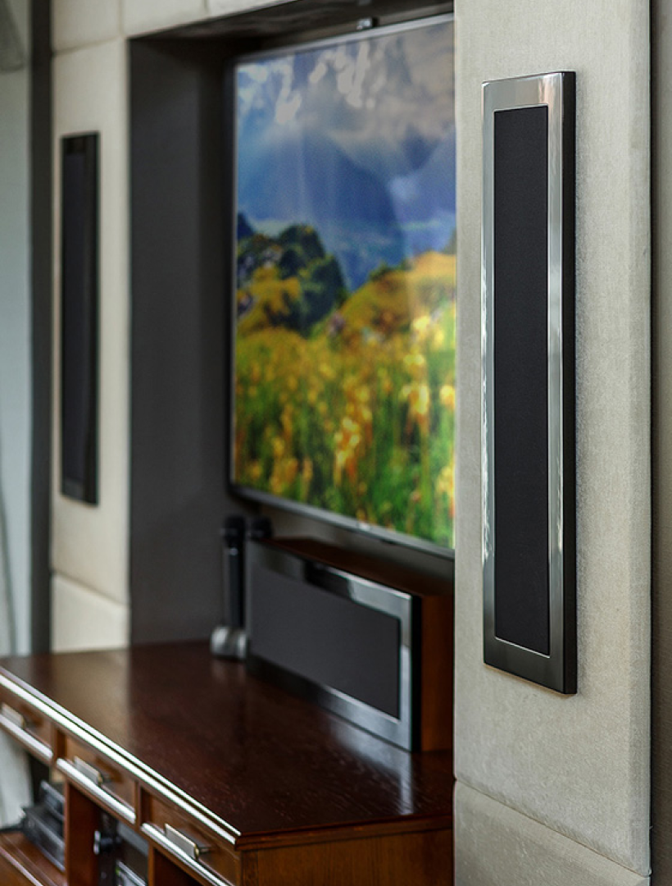
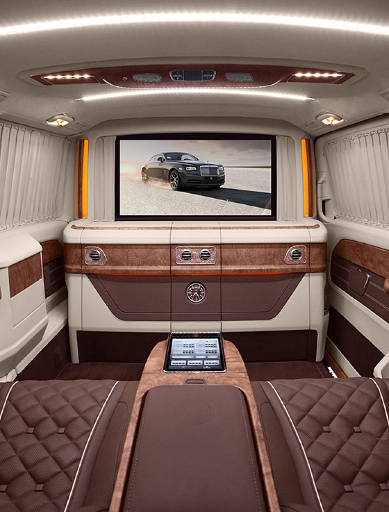
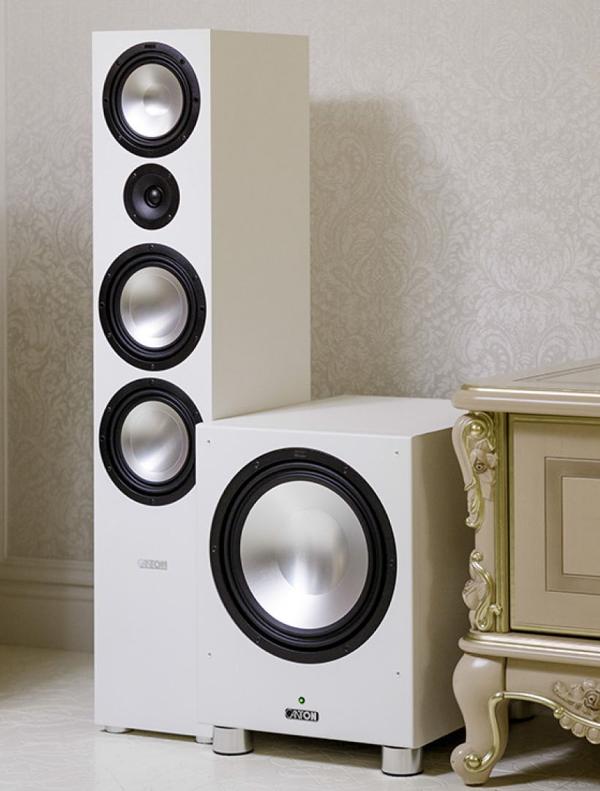
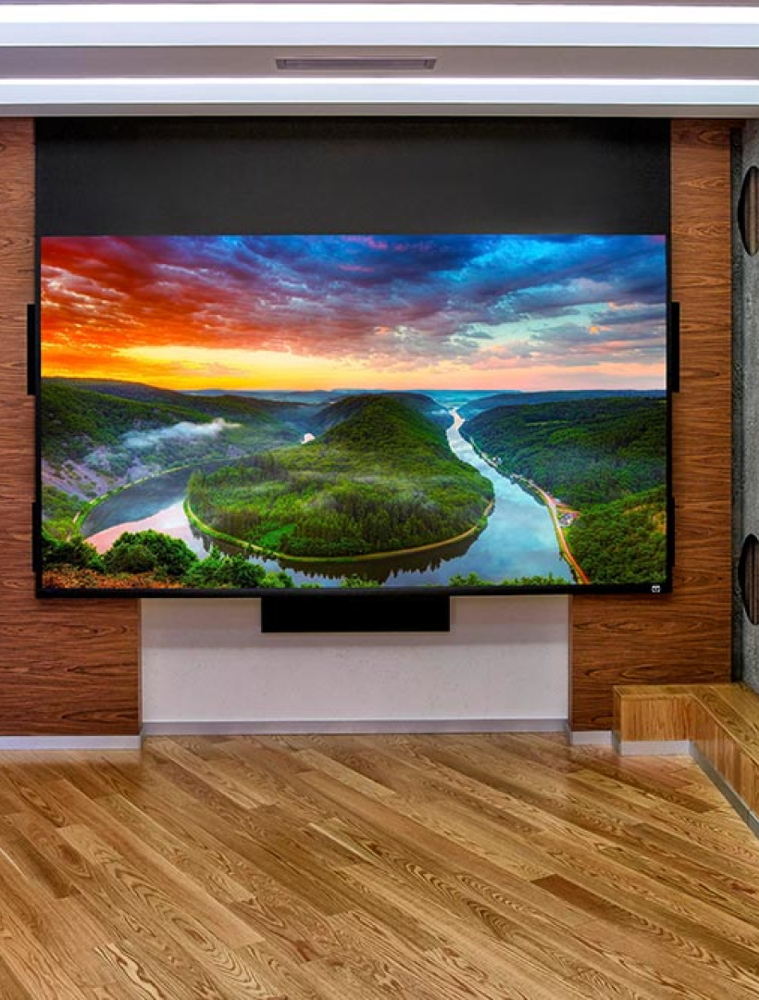

Портфолио

Домашний кинотеатр с изюминкой
В нашем новом проекте домашнего кинотеатра задача была в целом довольно типичной – построить систему с использованием встроенных акустических систем.

Роскошный автомобиль с «умным салоном»
Эксклюзивный Mercedes Benz V class обрел не только шикарный салон первого класса с креслами, баром, сейфом и телевизором, но и благодаря нашей помощи позволил управлять всем этим богатством с iPad!

Гостиная-кинотеатр
Посмотрев на фотографии этой светлой гостиной сразу и не поймешь, что расположена она в цокольном этаже дома и не имеет окон.

Кинотеатр на крыше
Посмотрев на фотографии этой светлой гостиной сразу и не поймешь, что расположена она в цокольном этаже дома и не имеет окон.